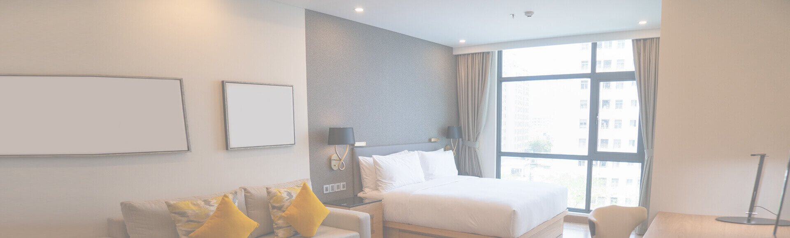

<div class="wrapper">
	<div class="two-colums flex">
	
		<div class="column-left"> 
			@@include('stock.html')
			@@include('right-menu.html')
		</div>
		
		<div class="column-right">
			<div class="content">
				<h1 class="inner-caption">Матовые натяжные потолки</h1>
				<div class="inner-main flex">
					<div class="inner-main__photo">
						<div class="inner-main__photo-inner"> 
							
						</div>
					</div> 
					<div class="inner-main__form">
						<div class="inner-main__form-inner">
							<div class="inner-main__caption">Акционная цена:</div>
							<div class="inner-main__prices flex">
								<div class="inner-main__newprice">150 руб./м<sup>2</sup></div>
								<div class="inner-main__oldprice">299 руб./м<sup>2</sup></div>
							</div>
							<form class="wpcf7-form wpcf7-form_row"> 
								<span class="wpcf7-form-control-wrap">
									<input type="text" name="E-mail" value="" size="40" class="wpcf7-form-control wpcf7-text wpcf7-validates-as-required" aria-required="true" aria-invalid="false" placeholder="Ваш город, район *">
								</span>
								<span class="wpcf7-form-control-wrap">
									<input type="tel" name="phone" value="" size="40" class="wpcf7-form-control wpcf7-text wpcf7-validates-as-required" aria-required="true" aria-invalid="false" placeholder="Телефон *">
								</span>
								<span class="wpcf7-form-control-wrap wpcf7-form-control-wrap_row">
									<button class="form__button button button_black">Заказать по акции</button>
								</span>
							</form>
						</div>
					</div> 
				</div>
				
				<p>Матовые натяжные потолки, для любителей оформлять помещения в классическом стиле. Компания Новый Стиль рада предложить один из лучших вариантов по соотношению стоимости и качества.</p>
				<h3>Главные особенности матовых полотен</h3> 
				
				<p>Внешне они практически не отличаются от побеленной ровной потолочной поверхности, но при этом выделяются по множеству уникальных эксплуатационных преимуществ. Давайте вкратце поговорим о них.</p>
				<h2>Главные особенности матовых полотен</h2> 
				<ul>
					<li>Не отражают свет и не создают бликов.</li>
					<li>Внешне напоминают идеальную побелку.</li>
					<li>Хорошо впишутся в классический интерьер.</li>
					<li>Подходят для офисных помещений и конференц-залов.</li>
				</ul>
				<h2>Фото матовых натяжных потолков</h2>
				<div class="inner-gallery flex">
					<div class="inner-gallery__block">
						<a href="#"></a>
					</div>
					<div class="inner-gallery__block">
						<a href="#"></a>
					</div>
					<div class="inner-gallery__block">
						<a href="#"></a>
					</div>
					<div class="inner-gallery__block">
						<a href="#"></a>
					</div>
				</div>
				<h2>Где лучше устанавливать их?</h2>
				<p>Матовые натяжные потолки заказывают для самых разных помещений — залов, кабинетов, детских, ванных, кухонь, гостиных и т.д. Кроме того, в последние годы повышенным спросом матовые полотна стали пользоваться во многих административных и коммерческих учреждениях, таких как офисы, банки, институты, школы, детские садики и пр.</p>
				<p>Если же говорить про психологию воздействия, то матовое полотно лучше устанавливать в помещениях, предназначенных для отдыха и релаксации, поскольку оно позволяет настроить практически любого человека на отдых и расслабление. </p>
				<h2>Классика никогда не стареет! </h2>
				<p>Это про как раз про матовую фактуру. Дома такие потолки чаще всего  устанавливают в зале, гостиной, спальне и детской. Спокойная обстановка способствует отдыху, а потолок не оттягивает внимание на себя.</p>
				<ol>
					<li>Не отражают свет и не создают бликов.</li>
					<li>Внешне напоминают идеальную побелку.</li>
					<li>Хорошо впишутся в классический интерьер.</li>
					<li>Подходят для офисных помещений и конференц-залов.</li>
				</ol> 
				<p>Хотите отступить от классики? Выбирайте цветные матовые потолки. Они сделают интерьер более изысканным, немного разрядят спокойную обстановку.</p>
				<p>За счет большой ширины (до 5,5 метров) вы можете купить бесшовный матовый потолок даже в большую комнату. Используйте наш <a href="#">калькулятор</a>, чтобы рассчитать стоимость.</p>
				<p><strong>Матовый натяжной потолок: стоит дешево, выглядит дорого!</strong></p>
				<a href="#order" data-fancybox="" class="content__button button button_with-icon">Вызвать замерщика</a>
			</div>
		</div>
	</div>
</div>